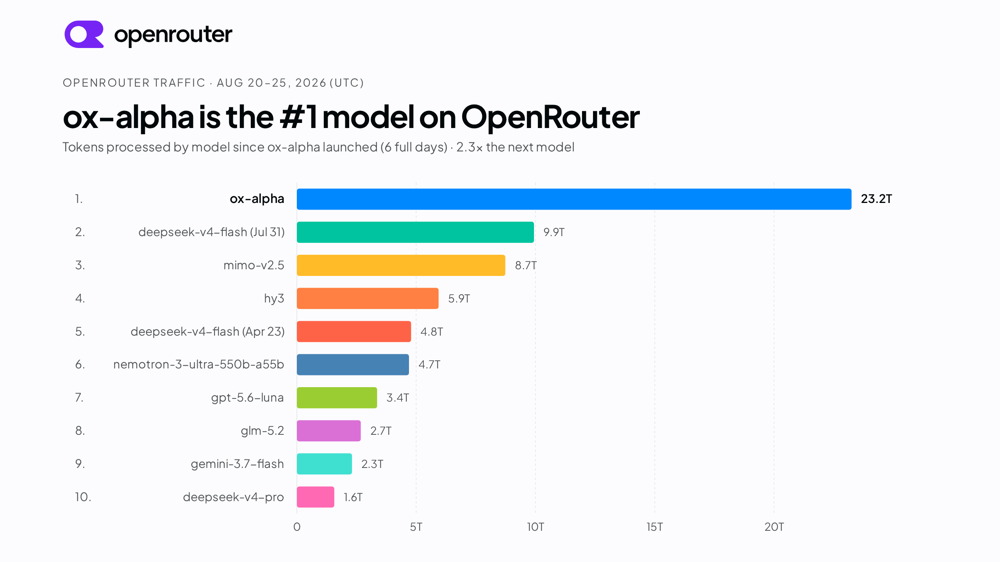

先给结论：Flash 的“快”来自系统性取舍
320B 总容量保留表达空间，稀疏路径控制计算量。
重点解决的不只是窗口大小，还有 KV、索引和带宽。
文章报告相对初始基线的端到端提升。
为什么长上下文模型不能只靠“堆显存”
当上下文从几十万 token 走向一百万 token，成本不再只由参数量决定。每一层 attention 都会面对更大的访存和 KV cache；如果用稀疏 attention，又会引入额外的 indexer；如果模型具备视觉输入，还要承担编码、预填充和解码之间的负载不平衡。
模型侧瓶颈
全局 attention 的计算与 KV cache 随序列长度快速膨胀。单纯减少层数或参数，可能损失长程依赖和复杂任务能力。
系统侧瓶颈
不同请求的图像编码、prefill 和 decode 负载不同；国产芯片还受单卡显存、互联带宽和算子适配限制。
所以“Flash”的定义不是某一个 kernel 更快，而是让模型少做无效的全局计算，同时让服务系统少等待、少搬运、少同步。
混合注意力：局部用线性，全局用稀疏
GLM-5.3-Flash 采用 hybrid architecture：线性注意力通过状态建模捕获局部依赖；稀疏注意力借助轻量 indexer 从长上下文中寻找全局证据。两者分工的关键，是避免把每个 token 都送入同一种昂贵的全局计算。

原始架构图：混合线性注意力与稀疏注意力共同构成 GLM-5.3-Flash 的长上下文路径。
文章进一步引入 IndexPool：将 4 个 indexer key vector 通过加权 pooling 压缩成 1 个，降低百万上下文下索引器的计算和内存压力。相较 GLM-5.3，文章报告 attention compute 降低约 3.0×，KV cache 降低约 4.4×。
视觉能力的价值：让 agent 看见自己做出的结果
对于前端、游戏、3D 和桌面自动化，代码能否运行只是最低标准。布局错位、交互不通、图表误读和渲染异常，往往只有在“看一眼结果”后才会暴露。GLM-5.3-Flash 将视觉放进 coding loop：生成 → 观察 → 判断 → 修正。


原始视觉自验证示例：模型通过观察渲染结果发现布局问题，并在下一轮修正。
这意味着多模态不是一个“支持图片输入”的开关，而是 agent 的反馈通道。训练数据需要包含真实交互轨迹、视觉判断和迭代修复，推理系统也需要让截图、GUI 操作和后续决策形成可观测链路。
能力提升集中在长任务和工具协作
从 Z.ai 公布的结果看，GLM-5.3-Flash 相比 GLM-5.2 的优势主要出现在 coding、agent 和视觉任务，而不是单一的短文本问答。

原始综合性能图：模型位于较高 intelligence / 较低 task cost 的区域。

原始 coding 与 agent benchmark 图：DeepSWE、AutomationBench 等任务上相对 GLM-5.2 有明显提升。
| 评测 | GLM-5.3-Flash | GLM-5.2 | 解读 |
|---|---|---|---|
| Terminal Bench 2.1 | 84.3 | 81.0 | 终端任务 |
| DeepSWE v1.1 | 63.4 | 46.2 | 复杂软件工程 |
| AutomationBench | 48.8 | 26.2 | 工具自动化 |
| Toolathlon Verified | 78.4 | 59.9 | 工具协作 |
| MMVU | 80.5 | — | 多模态理解 |
说明：以上数字来自 Z.ai 官方博客，实际结果会受到 harness、提示词、采样设置和评测版本影响。
模型结构只有落到 serving stack 才算效率
Z.ai 在国产 AI 芯片集群上部署 GLM-5.3-Flash，并围绕硬件限制构建推理引擎。核心设计是 EPD 解耦：把多模态编码、prompt prefill、逐 token decode 拆为可独立调度和扩缩容的 worker pool。

原始 serving 相关图，展示模型在真实系统中的效率目标。
处理图片和其他多模态输入。
处理长上下文提示词。
持续生成 token。
配套优化包括 SGLang、tensor parallelism、ReplaySSM、W8A8、INT8/FP8/BF16 cache quantization 和 Layer Split。文章报告相对同硬件初始基线约 3× 的端到端性能提升，说明模型与硬件共同设计比“换一个更大 GPU”更能决定成本曲线。
这篇发布对工程团队真正有用的地方
稀疏激活降低了计算，但必须用真实任务吞吐、首 token 延迟、持续生成速度和单位任务成本验证，而不是只看参数量。
IndexPool、KV cache 量化和 EPD 解耦分别作用在不同瓶颈上，单独优化任何一项都可能被另一项抵消。
模型是否能发现自己生成的页面有问题，比一次图片问答分数更接近真实产品价值。
算子、并行、缓存、带宽和调度应从模型设计阶段共同规划；否则理论上的稀疏性未必能变成实际收益。